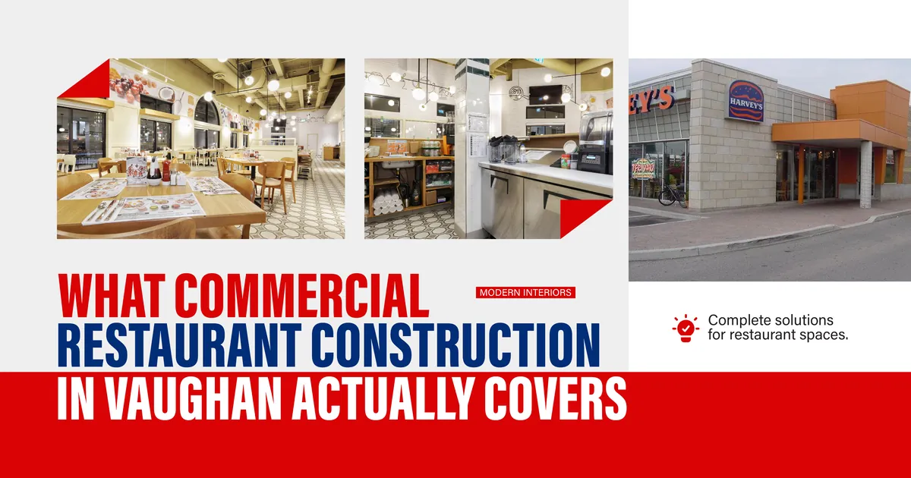
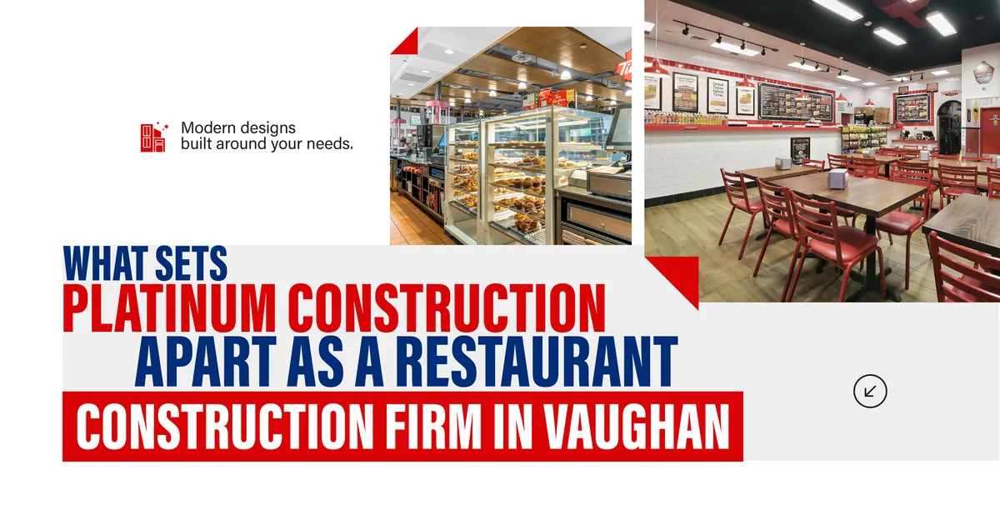
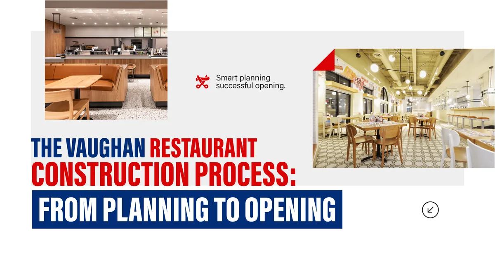
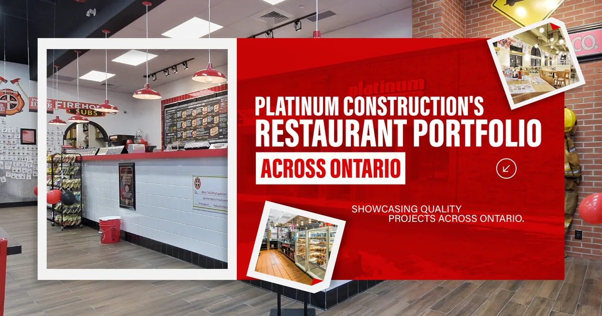
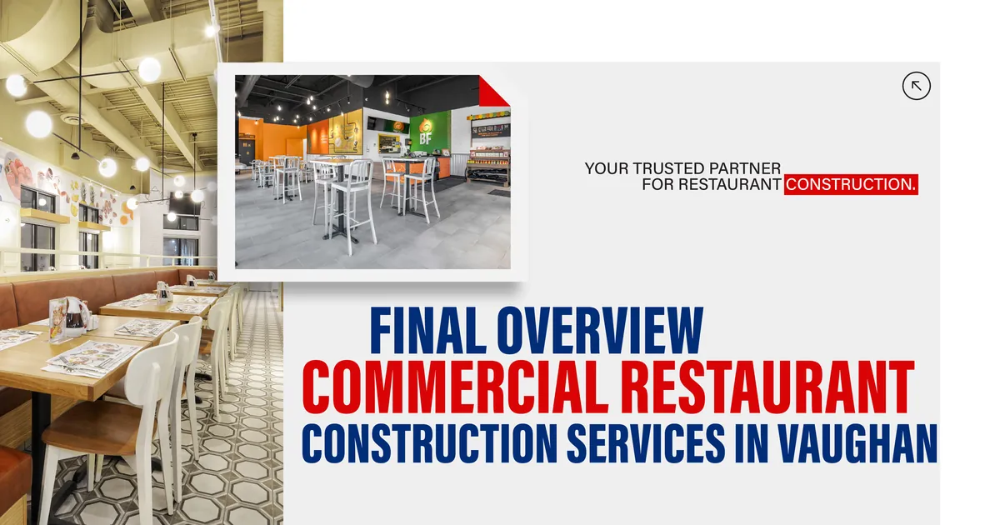

But a great location and a strong concept only get you so far. The restaurant space itself needs to be built right. And commercial restaurant construction in Vaughan is considerably more involved than most first time restaurant owners expect before they go through it.
The kitchens need to meet commercial health authority standards. The ventilation systems need to handle the real demands of a working kitchen, not a residential estimate of what cooking produces. The electrical load needs to support commercial equipment running simultaneously at full capacity. And the dining room needs to deliver the customer experience your brand promises from the day you open.
Platinum Construction provides commercial restaurant construction services across Vaughan and York Region. We have built for some of the most recognized food brands in Ontario, and we bring that same level of technical discipline and project accountability to every restaurant project we take on regardless of size.

What Commercial Restaurant Construction in Vaughan Actually Covers
When restaurant owners and food service operators search for restaurant construction services in Vaughan, they are often searching for something specific. A new build out. A kitchen renovation. A full fit out in a commercial plaza space. A refresh of an existing dining room. Sometimes all of the above within a single project.
Platinum Construction handles every one of these scopes. Here is what our commercial restaurant construction services in Vaughan cover in practice.
New Restaurant Build Outs
A new restaurant build out starts with an empty commercial shell and ends with a fully operational food service space. This is the most comprehensive scope of restaurant construction work and involves every trade from structural and plumbing through to millwork, flooring, and technology installation.
As a restaurant construction company in Vaughan with a verified portfolio of completed food brand builds across Ontario, we manage new build out projects with a documented process that keeps every phase on schedule. We finalize the layout and equipment plan before rough in work begins, manage the City of Vaughan permit process as part of our service, and coordinate every trade under a single project manager who stays accountable to the timeline throughout.
Commercial Kitchen Construction and Renovation
The kitchen is the operational core of any restaurant. Commercial kitchen construction in Vaughan involves equipment layout planning, plumbing rough in for multiple water connections, electrical circuits sized for commercial cooking equipment loads, ventilation hood and exhaust system installation, floor drain placement, waterproofed wet areas, and grease interceptor connections.
Commercial kitchen renovation follows the same technical requirements but adds the complexity of working within existing infrastructure. Older commercial spaces in Vaughan and York Region sometimes have electrical panels that cannot support modern kitchen equipment loads, or ventilation configurations that do not meet current code. A thorough site assessment before any kitchen renovation begins is what separates a renovation budget that holds through to completion from one that grows once the walls open.
Restaurant Fit Out in Commercial Plaza Spaces
Much of the restaurant construction work across Vaughan happens inside existing commercial plazas and retail developments. Restaurant fit out contractor work in this context means understanding the landlord's base building specifications, connecting to existing utility infrastructure, meeting centre management requirements during construction, and delivering a finished space that works within the physical constraints of the tenancy.
Our restaurant builders in Vaughan have completed fit out projects inside commercial environments of different scales and management frameworks, which means we understand how to navigate these environments without losing time to avoidable coordination problems.
Restaurant Renovation and Refreshes
Existing restaurants in Vaughan and across York Region sometimes need renovation to stay competitive, accommodate a new concept, or address operational problems that have developed over time. Commercial restaurant renovation in Vaughan ranges from a focused kitchen upgrade to a complete dining room transformation.
Every renovation we take on starts with an honest assessment of what the existing space can support and what needs to be changed at the infrastructure level, not just at the surface level. That assessment shapes an estimate that reflects the real project and prevents the budget surprises that come from discovering infrastructure problems after construction is underway.

What Sets Platinum Construction Apart as a Restaurant Construction Firm in Vaughan
There are commercial builders in Vaughan who will take on a restaurant project. There are significantly fewer who have the specific experience, the technical knowledge, and the project management structure that restaurant construction demands.
Here is what Platinum Construction brings to every restaurant construction project in Vaughan that general commercial contractors typically cannot match.
| Capability | What It Means for Your Project |
|---|---|
| Verified food brand portfolio | Completed builds for Chipotle, Starbucks, Edo Japan, and Tim Hortons across Ontario |
| Commercial kitchen expertise | Deep understanding of ventilation, grease management, equipment rough in, and health compliance |
| City of Vaughan permit management | Full permit process handled as part of our service |
| York Region Public Health coordination | Experience meeting food service regulatory requirements in this region |
| Dedicated project manager | One accountable contact from planning through to opening day |
| Itemized, transparent estimating | Detailed cost breakdown before any work begins |
| Established local subcontractor network | Reliable trades across Vaughan and York Region who understand food service builds |
This combination is what makes Platinum Construction a genuine restaurant construction specialist in Vaughan rather than a general commercial contractor who occasionally builds restaurants.

The Vaughan Restaurant Construction Process: From Planning to Opening
Understanding how our restaurant construction process actually works helps new and experienced restaurant operators know what to expect and where the important decisions happen.
Planning and Concept Review
Every project starts with a thorough planning conversation. We want to understand your concept, your menu and cooking methods, your equipment list, your target opening date, and your realistic budget before we develop any construction plan. This conversation shapes the kitchen layout, the ventilation design, the electrical distribution plan, and the overall project schedule.
Site Assessment
Before any pricing is finalized, we assess the physical space. We look at the existing electrical infrastructure, plumbing condition, structural configuration, and any landlord imposed constraints that will affect the build. This assessment is what allows us to provide an estimate that holds through to completion.
Detailed Estimating and Contract
Our estimates break down every major cost category as a separate line item. Kitchen construction, dining room work, mechanical systems, millwork, flooring, permits, and contingency all appear independently. This level of detail gives restaurant owners a clear picture of where the budget is going and what is included before any commitment is made.
Permit Applications
We manage the full permit process through the City of Vaughan, covering building, plumbing, electrical, and mechanical permits. We also coordinate with York Region Public Health on food service approval requirements. This process typically runs four to eight weeks in Vaughan, and we build that timeline into the project schedule from the start.
Construction and Trade Coordination
Construction moves through a defined sequence. Rough in work for plumbing and electrical happens first, followed by mechanical systems, then framing and drywall, then flooring, millwork, and finishing work. A dedicated project manager coordinates every trade, keeps the schedule on track, and communicates with you consistently throughout.
Inspections and Occupancy
Final inspections with the City of Vaughan and York Region Public Health happen before occupancy. We manage the coordination of these inspections and address any items before the opening date rather than after it.
Here is a realistic overview of how the timeline typically flows for a commercial restaurant construction project in Vaughan.
| Stage | Typical Duration |
|---|---|
| Planning, layout finalization, and estimating | 2 to 4 weeks |
| Permit applications and City of Vaughan approval | 4 to 8 weeks |
| Demolition and site preparation | 1 to 2 weeks |
| Plumbing and electrical rough in | 2 to 3 weeks |
| Mechanical, HVAC, and ventilation installation | 2 to 3 weeks |
| Framing, drywall, and ceiling work | 2 to 3 weeks |
| Flooring, millwork, and finish work | 2 to 3 weeks |
| Final inspections and occupancy | 1 to 2 weeks |
Most commercial restaurant construction projects in Vaughan run between four and six months from the start of planning to opening day. Smaller fit out projects with limited kitchen scope can move faster. Larger full service restaurant builds with complex kitchen and bar infrastructure take longer.

Platinum Construction's Restaurant Portfolio Across Ontario
Our restaurant construction specialists have delivered food service projects across Ontario that demonstrate the range of our commercial restaurant construction capability. Completed projects documented at platinumconstruction.com include multiple Chipotle Mexican Grill locations across Milton, Etobicoke, Waterloo, Guelph, and Markham, Starbucks locations in Whitby, Midland, Kitchener, Oshawa, and Markham, an Edo Japan location at Square One in Mississauga, and Tim Hortons builds at ONroute Cambridge North and South.
This portfolio is not just a list of brand names. It is a demonstration of what restaurant design and construction look like when executed at a standard that national brands require across multiple Ontario markets. Every completed location on that list met brand specifications, satisfied local regulatory requirements, and opened on schedule.
That is the standard we bring to every restaurant construction project we take on in Vaughan and across the region.
Frequently Asked Questions
What restaurant construction services does Platinum Construction offer in Vaughan?
We offer new restaurant build outs, commercial kitchen construction, restaurant fit out in commercial spaces, commercial restaurant renovation, and kitchen refresh projects across Vaughan and York Region.
How long does commercial restaurant construction take in Vaughan?
Most projects run between four and six months from the start of planning to opening day including permit processing time through the City of Vaughan.
Does Platinum Construction manage the permit process for restaurant builds?
Yes. We handle all permit applications through the City of Vaughan and coordinate with York Region Public Health as part of our restaurant construction service.
What is included in a detailed restaurant construction estimate?
Our estimates include separate line items for kitchen construction, dining room work, mechanical systems, electrical, plumbing, millwork, flooring, permits, and contingency so clients have a clear picture of the full project cost before work begins.
Has Platinum Construction completed restaurant builds for national brands?
Yes. Our completed portfolio includes Chipotle Mexican Grill, Starbucks, Edo Japan, and Tim Hortons locations across multiple Ontario markets.
Why should I choose a restaurant construction specialist over a general commercial builder?
Restaurant construction involves commercial kitchen compliance, grease management, health authority approval, and food service specific mechanical requirements that general commercial builders without restaurant experience frequently underestimate or miss entirely.
How do I start a restaurant construction project with Platinum Construction in Vaughan?
Visit platinumconstruction.com to contact our team and book a free initial consultation. We will discuss your concept, location, timeline, and budget to get the planning process started.

Final Overview Commercial Restaurant Construction Services in Vaughan
Commercial restaurant construction in Vaughan demands a construction partner who understands the technical complexity of food service builds, manages the local regulatory process efficiently, and delivers a finished space that works from the moment it opens.
Platinum Construction is a restaurant construction company in Vaughan with a proven portfolio, a structured process, and the technical depth to handle every scope of restaurant build from a focused kitchen renovation to a full new build out. If you are planning a restaurant project in Vaughan or anywhere across York Region and Ontario, we are ready to bring that experience to your build. Visit platinumconstruction.com to start the conversation today.